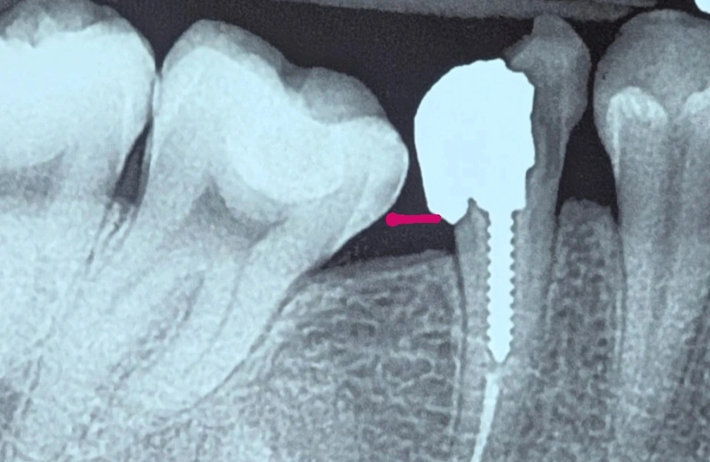

Chairside 21
چالش حفظ یا کشیدن دندان پرهمولر دوم (کیس ریپورت پروتز)

بیمار با این سوال مراجعه کرد که آیا دندان ۵ قابل نگهداری است یا خیر. بعد از حذف کاملِ پوسیدگیها و ترمیمهای قدیمی، تنها دیوارهی باکالِ دندان باقی مانده بود.
از نظرِ طولِ ریشه شرایط خوبی وجود داشت. اگر قرار بود دندان نگه داشته شود، به جراحیِ افزایشِ طولِ تاج (CL) نیاز بود؛ چیزی حدودِ ۳ تا ۴ میلیمتر برداشتِ استخوان. بعد از جراحی هم پروگنوزِ دندان در حدِ Fair میماند و نسبتِ تاج به ریشه هنوز قابلقبول بود. اما چالشِ اصلی جای دیگری بود: دندانِ مجاور.
در گرافی، دندانِ ۷ تیلتِ شدیدِ مزیالی دارد. همین حالا، لولِ لثه — که با خطِ قرمز مشخص شده — بهخاطرِ اتچمنتِ بالایی که به دندانِ ۷ دارد، مانعِ گیرِ غذایی میشود.
اگر جراحیِ CL انجام میشد و لولِ استخوان و لثه پایین میآمد، بهخاطرِ شیبِ شدیدِ دندانِ ۷، تغییرِ آناتومیِ ناحیه یک گیرِ غذاییِ شدید و تصاعدی ایجاد میکرد. این وضعیت هم بیمار را آزار میداد و هم ریسکِ پوسیدگیِ دندانِ ۷ و مشکلاتِ پریودنتالِ مزمن را در این ناحیه بهشدت بالا میبرد. برای نجاتِ یک دندان، سلامتِ دندانِ مجاور و راحتیِ بیمار به خطر میافتاد.
با در نظر گرفتنِ همهی این شرایط، تصمیمِ منطقیتر این بود که دندانِ ۵ بهصورتِ کانزرواتیو کشیده شود تا استخوان برای درمانِ ایمپلنت حفظ شود و این زنجیره از مشکلات برای بیمار و دندانهای مجاور پیش نیاید.
روندِ رسیدن به این تصمیم به این ترتیب بود:
- ارزیابیِ دندانِ ۵ پس از حذفِ کاملِ پوسیدگی و ترمیمهای قدیمی؛ فقط دیوارهی باکال باقی مانده بود.
- بررسیِ گزینهی حفظ: طولِ ریشه مناسب بود، اما نیاز به CL وسیع (۳ تا ۴ میلیمتر برداشتِ استخوان) و پروگنوزِ نهاییِ Fair داشت.
- شناساییِ محدودیتِ واقعی: تیلتِ شدیدِ مزیالیِ دندانِ ۷ که پایینآمدنِ لولِ لثه/استخوان را به گیرِ غذاییِ تصاعدی تبدیل میکرد.
- تصمیم به کشیدنِ کانزرواتیوِ دندانِ ۵ برای حفظِ استخوان جهتِ ایمپلنت و پیشگیری از آسیب به دندانِ مجاور.
️گاهی تصمیمِ نگهداشتنِ یک دندان باید در برابرِ سلامتِ دندانِ مجاور سنجیده شود، نه فقط در برابرِ پروگنوزِ خودِ همان دندان.
️جراحیای که رادیوگرافیک قابلتوجیه بهنظر میرسد، وقتی آناتومیِ دندانِ مجاور اجازه نمیدهد، دیگر گزینهی درست نیست.
محتوای این صفحه برای استفادهٔ آموزشی دندانپزشکان و دانشجویان دندانپزشکی تهیه شده است.